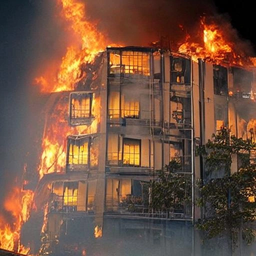
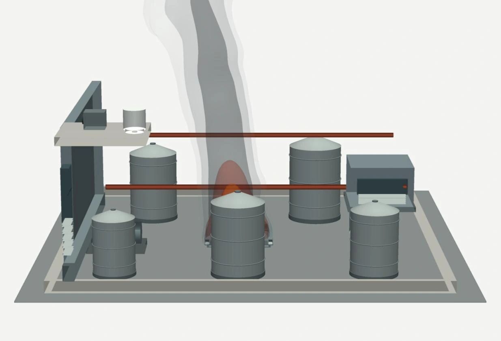
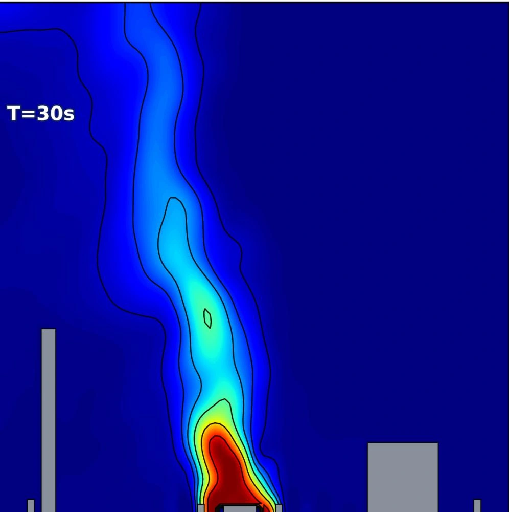
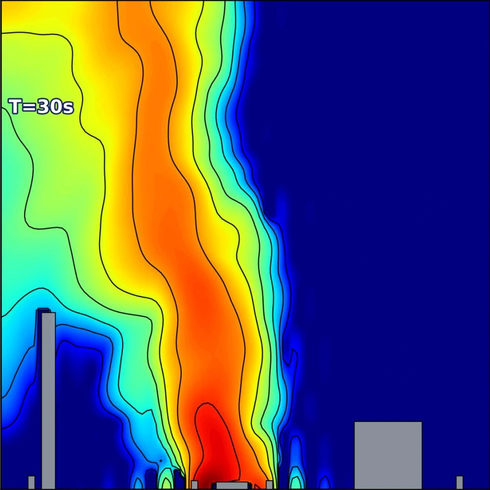

Temporal
forecasting
What happens next?
Predict how fire and physical fields evolve from partial observations.
Can multimodal models understand a world of interacting physical fields?
Code and dataset links are listed in the manuscript; public access is currently unavailable.
Recognizing a fire is only the beginning.
Understanding how physical fields interact remains a challenge for today’s models.




Real fire example: Fig. 1. Reconstruction and physical fields: Fig. 5.
Beyond objects and appearances: reasoning about continuous fields, hidden mechanisms, and a world that changes over time.
FireWorldBench is a multimodal benchmark for complex physical-world intelligence through coupled-field fire dynamics. Across 520 fire worlds and 9,074 question–answer instances, it combines structured observations, physical-field visualizations, and 3D scene representations.
A dual-axis evaluation tests five physical capabilities across three stages of fire evolution, using matched choice and open-report interfaces. The results reveal persistent gaps in reading physical fields, connecting observations to causal mechanisms, and reasoning about interventions.
What happens next?
What is happening, and where?
How do the fields interact?
Why does it happen?
What if conditions change?
Co-registered 3D scenes and physical fields reveal how a fire develops across seven environment families.
Reproducible scenarios with aligned geometry, physical fields, and temporal observations.
Observed experimental fires anchor reconstructions, with latent fields completed through simulation.
A complementary evaluation of structured physical records and multimodal visual evidence.
| GPT-5.6-Luna | 55.34BEST | 42.99 | 12.35 |
|---|---|---|---|
| Qwen3.5-Plus-02-15 | 47.25 | 39.40 | 7.85 |
| Gemini-2.5-Flash | 46.20 | 44.83BEST | 1.37 |
| Claude-Haiku-4.5 | 44.78 | 39.51 | 5.27 |
Completion accuracy (%), averaged over P1–P5 and aggregating choice and open-report scores. Frontier-model excerpt from Table 1; best scores are highlighted within this selection. The S − I gap is in percentage points.
All four frontier models score lower on rendered physical evidence than on structured records in the reported capability averages.
Evidence-F1, Mechanism Alignment, and Gold-Linked Support evaluate whether explanations connect predictions to physical evidence.
FireWorldGPT studies physics-aware prompting, chain-of-thought reasoning, and supervised adaptation to strengthen domain understanding.
Supervised adaptation improves completion accuracy across all four evaluated base models.
+12.0percentage points
largest accuracy improvement
Controlled simulations · Table 5 · Accuracy (%)
Accuracy gains do not imply improved confidence calibration.
Designed scenarios and observed experiments flow through a shared, provenance-preserving pipeline.
Define geometry, materials, ignition, and event constraints.
FDS simulates coupled fields; Smokeview produces aligned 3D renderings.
Matched questions test five capabilities across three fire stages, scored without an LLM judge.
If you find FireWorldBench useful in your research, please cite the manuscript.
Citation for the arXiv preprint.
@misc{chen2026fireworldbench,
title = {FireWorldBench: Benchmarking Complex Physical
World Intelligence through Coupled-Field
Fire Dynamics},
author = {Qiang Chen and Hao Guo and Huatai Zhu and
Tairan Huang and Yichao Cao and Hongyan Xu and
Keke Huang and Haifeng Li and Yi Chen and Xiu Su},
year = {2026},
eprint = {2609.23064},
archivePrefix = {arXiv},
primaryClass = {cs.AI},
url = {https://arxiv.org/abs/2609.23064}
}